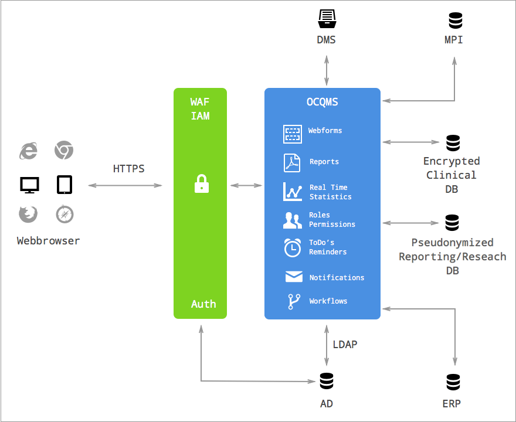

Blog
Übersichtliches Formular für die Familienanamnese
In der neuen Version von OCQMS wurde die Familienanamnese noch übersichtlicher gestaltet.
Die Anforderungen an ein Formular zur Familienanamnese:
- Erkrankungen Vater, Mutter, Geschwister, Gruselten, Kinder
- Das Formular ist nach Krankheiten strukturiert.
- Es kann erfasst werden, wenn eine Krankheit nicht aufgetreten ist.
- Ist eine Krankheit aufgetreten, so wird dazu eine Alterskategorie erfasst.
- Das Formular bietet einer Liste von Krankheiten, deren Auftreten erfasst werden soll. Fehlende Angaben werden markiert.
- Zu jeder Krankheit kann eine Notiz erfasst werden.
- Es können weitere Erkrankungen, welche nicht auf der definierten Liste sind hinzugefügt werden.
System Integration via APIs
OCQMS offers APIs to integrate the application into different software environments. Application programming interfaces (API) are widely considered to be the most flexible and robust way to integrate different software applications.

- WAF: Web Application Firewall
- IAM: Identity and Access Management
- DMS: Document Management System
- MPI: Master Patient Index
- AD: Active Directory
- ERP: Enterprise Resource Planning
Learn more about OCQMS: www.healthdata.ai
Research Data Repository
There are best practices for data processing and exchange: https://github.com/jtleek/datasharing
Repeatability
Repeatability is the cornerstone of scientific data processing and analysis. All results must be repeatable in future and independent of the persons involved. In addition, both the data record (raw data) and the steps taken during data processing must be available in a suitable and documented form.
Version Control
Version control is a system that records changes to a file or set of files over time so that you can recall specific versions later. Git (http://git-scm.com) is a free software for distributed version management of files. For our customers we are making a Git server available for managing and processing research data.
- 100% repeatable anytime
- Change log (who changed what when and why?)
- Cooperation including conflict management
Data processing
Pre-processing contains data cleaning, normalization, and transformation. Python scripts are for pre-processing.
Data exchange
Manual steps should no longer be necessary to transform the data into the import format of another database. The transformation steps are all programmed in Python scripts so that the data can be exchanged anytime without additional effort.
Data analysis / Statistics
Usually, the researcher carries out the data analysis personally. In addition, he uses his own statistics software. We support researchers during data processing and, as needed, during data analysis.
Data Documentation (Metadata)
The database comprises hundreds of questions and database fields. In order to maintain an overview of all fields, as well as their descriptions, values, and enumerations, we automatically create documentation of all arrays.
Sphinx (http://sphinx-doc.org) automatically regenerates the data dictionary from the interfaces in the code. Thus, we guarantee that the documentation is always up-to-date even when further developments occur. The documentation is published online at the time of each release so that researchers easily have access to the information.
Exemplary research project
A new Git repository is created for each research project. Due to the model, folder structure and certain contents are created from a template.
- Naming convention: Researcher-Topic-Year (e.g. Hofer-TNFSwitching-2014)
- Predefined folder
- Data snapshot: While creating a new repository, the raw data (CSV files) of the most recent snapshot are automatically copied into the folder. As the need arises, these data can obviously be overwritten and checked-in afresh.
- Preprocessing scripts: Python scripts created from models. Alterable and 'isolated' within the project
- Processed data: CSV files of processed data
- README.txt: while creating a new research repository, a README.txt file is automatically created.
Research snapshots
The exported data are archived on the server as CSV files. The repository with the pseudonymized data has a simple predefined structure.
The data repository is write-protected. The new CSV files are automatically created on the server on the first day of each month. A conceivable option would also be to install an SQL database server (PostgreSQL) on the server so that SQL requests can be made directly on the server.
Pre-processing scripts
Python scripts are available for data processing. For instance, they offer a method of completing data fields.
IPython notebook
The interactive IPython notebook (http://ipython.org/notebook.html) can be for exploratory data analysis.
Intrusion Prevention: Potentielle Einbrecher automatisch aussperren
Webserver stehen in einer potentiell unsicheren Umgebung und sind daher durch «brute force»-Angriffe verwundbar. Ein Einbrecher versucht dabei mit «roher Gewalt» (simplem Ausprobieren Tausender möglicher Passwörter) in ein System einzubrechen.
Eine solche Attacke muss erkannt und unterbunden werden. Benutzer, welche innerhalb eines kurzen Zeitraumes übermässig viele fehlgeschlagene Login- Versuche machen, werden vom System für eine gewisse Zeit automatisch blockiert. Damit ist es einem Angreifer nicht mehr möglich, sich mittels «wahllosem» Ausprobieren von Passwörtern Zugriff zu verschaffen.
Fail2ban scannt die Logfiles des Webservers (nginx) und aktualisiert die Firewall-Regeln des Linux Kernel Firewalls (iptables). Damit steht das Intrusion Prevention System (Fail2ban) vor der Webapplikation (Pyramid) und schafft so eine weitere Schicht zum Einbruchsschutz.
Mit Fail2Ban lässt sich die Rate der Anmeldeversuche einschränken, es schützt aber nicht vor Risiken einer schwachen Authentifizierungsmethode. Der Zugriff auf unsere Webapplikation erfolgt daher zweistufig: nach dem Login mit Benutzername und Passwort muss sich der Benutzer mit seinem persönlichen YubiKey identifizieren.
Data-Driven Analysis in der Rheumaforschung
Dr. Daniel Stekhoven berichtet im SCQM Jahresbericht über einen datengetrieben Ansatz in der Datenanalyse. Mittels Clustering können Muster für die Klassifikation von PsA Patienten identifiziert werden.
Eine kurze Beschreibung des Ansatzes findet sich im SCQM Jahresbericht [PDF, S. 15]: http://www.scqm.ch/uber-scqm/annual-reports/annual-report-2013